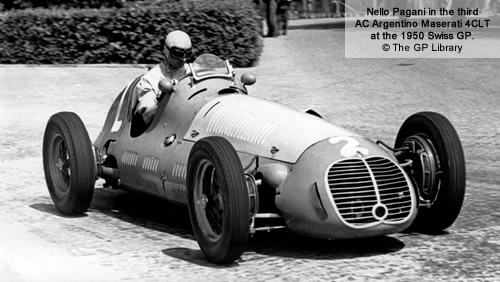
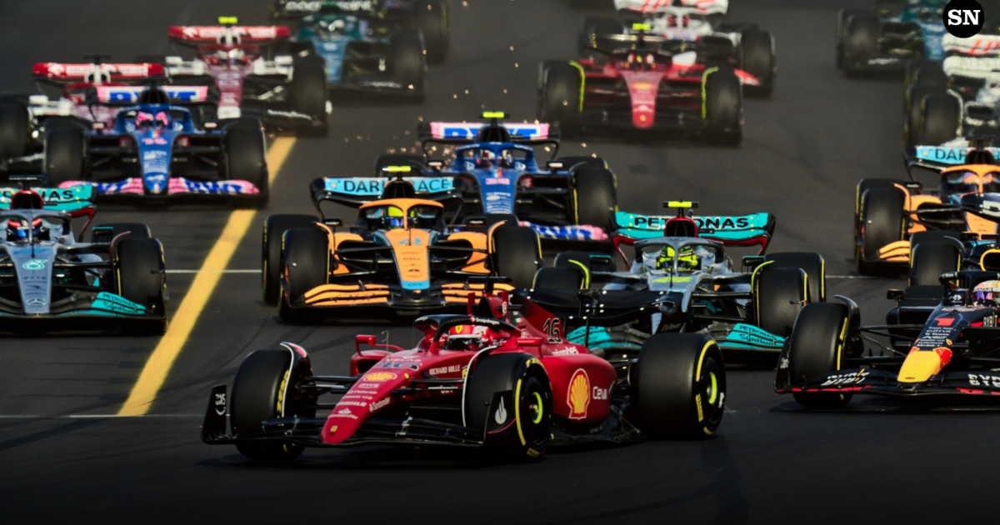

Che cos'è?
 La Formula 1, in sigla F1, in inglese Formula One e indicata in italiano come Formula Uno, è la massima categoria di vetture monoposto a ruote scoperte da corsa su circuito definita dalla Federazione Internazionale dell'Automobile (FIA). La categoria è nata nel 1948 (in sostituzione della Formula A, a sua volta sorta solo due anni prima, nel 1946), diventando poi a carattere mondiale nella stagione 1950. Inizialmente definita dalla Commissione Sportiva Internazionale (CSI) dell'Associazione Internazionale degli Automobil Club Riconosciuti (AIACR), associazione antesignana della Federazione Internazionale dell'Automobile, oggi la Formula 1 è regolata dal Consiglio Mondiale degli Sport Motoristici (in inglese: World Motor Sport Council, WMSC) della FIA. Il termine "formula", presente nel nome, fa riferimento a un insieme di regole alle quali tutti i partecipanti, le macchine e i piloti, devono adeguarsi; esse introducono un numero di restrizioni e specifiche nelle auto, al fine di evitare le eccessive disparità tecniche tra le auto, di porre dei limiti al loro sviluppo e di ridurre i rischi di incidenti. La formula ha avuto molti cambiamenti durante la sua storia. Per esempio, ci sono stati differenti tipi di motori, con schemi da quattro fino a sedici cilindri e con cilindrate da 1,5 a 4,5 l. La proprietà e l'organizzazione della competizione sono del Formula One Group controllato da Liberty Media.
La scorsa stagione
 Il campionato mondiale di Formula 1 2022 organizzato dalla FIA è stato, nella storia della categoria, la 73ª stagione ad assegnare il campionato piloti e la 65ª ad assegnare il campionato costruttori. È iniziato il 20 marzo e si è concluso il 20 novembre, dopo ventidue gare, come nella stagione precedente, rendendolo all'epoca nuovamente il campionato più lungo di sempre per numero di appuntamenti della storia della Formula 1. Il pilota campione del mondo della Red Bull Racing, Max Verstappen, si è aggiudicato per la seconda volta consecutiva in carriera il campionato piloti, il primo di nazionalità olandese nella storia della categoria ad ottenere nuovamente il titolo iridato. Verstappen diviene il secondo più giovane bicampione del mondo, l'undicesimo pilota a vincere il titolo piloti consecutivamente, nonché il diciassettesimo dei 34 campioni del mondo della categoria a vincere più di un titolo. Per la tredicesima volta nella storia del mondiale un pilota vince il campionato da campione in carica.Inoltre, Verstappen stabilisce il nuovo primato di punti conquistati in una stagione (454), battendo quello precedente di Lewis Hamilton (413) risalente al 2019. La scuderia austriaca Red Bull Racing si è aggiudicata per la quinta volta nella propria storia il mondiale costruttori, il primo nell'era turbo-ibrida, con i propulsori sotto una diversa denominazione, Red Bull Powertrains, in sigla RBPT, per la prima volta dalla stagione 2013 con il tedesco Sebastian Vettel, nel quale fu spinta da motori Renault. La scuderia di Milton Keynes termina una striscia record di otto mondiali costruttori vinti consecutivamente dalla tedesca Mercedes il 2014, prima stagione dell'era turbo-ibrida della categoria, e il 2021.[2] Il monegasco Charles Leclerc su Ferrari ha conquistato per la seconda volta il Trofeo Pole FIA, a seguito delle nove pole position.
All'alba di un nuovo inizio
 Il 23/02/2023, la Formula 1 torna in pista nei test pre-stagionali per l'inaugurazione della stagione 2023
e tutti i fans sono in trepida attesa per l'inizio di questa entusiasmante stagione che ci prospetta una battaglia per il
titolo a 3 punte: Oracle Red Bull , campione construttore in carica che ha con se il due volte campione del mondo
Max Verstappen e "The Minister of defens", Checo Perez; Mercedes AMG Petronas,
reduce da una stagione non ad altissimi livelli, ma sicuramente in crescita verso la fine della
stagione, ha come prima guida Sir. Lewis Hamilton, 7 volte campione, e George Russell, stella nascente della F1 entrato
in scuderia l'anno precedente; Scuderia Ferrari , ha concluso la stagione migliore degli ultimi 3 anni in 2° posizione, con non poche difficoltà,
ciò nonostante sembra essere favorita alla vittoria iridata, ha con se "Il Predestinato" Charles Leclerc e "The Smooth Operator" Carlos Sainz pieni di vigore
alla ricerca della vittoria.
Il 23/02/2023, la Formula 1 torna in pista nei test pre-stagionali per l'inaugurazione della stagione 2023
e tutti i fans sono in trepida attesa per l'inizio di questa entusiasmante stagione che ci prospetta una battaglia per il
titolo a 3 punte: Oracle Red Bull , campione construttore in carica che ha con se il due volte campione del mondo
Max Verstappen e "The Minister of defens", Checo Perez; Mercedes AMG Petronas,
reduce da una stagione non ad altissimi livelli, ma sicuramente in crescita verso la fine della
stagione, ha come prima guida Sir. Lewis Hamilton, 7 volte campione, e George Russell, stella nascente della F1 entrato
in scuderia l'anno precedente; Scuderia Ferrari , ha concluso la stagione migliore degli ultimi 3 anni in 2° posizione, con non poche difficoltà,
ciò nonostante sembra essere favorita alla vittoria iridata, ha con se "Il Predestinato" Charles Leclerc e "The Smooth Operator" Carlos Sainz pieni di vigore
alla ricerca della vittoria.